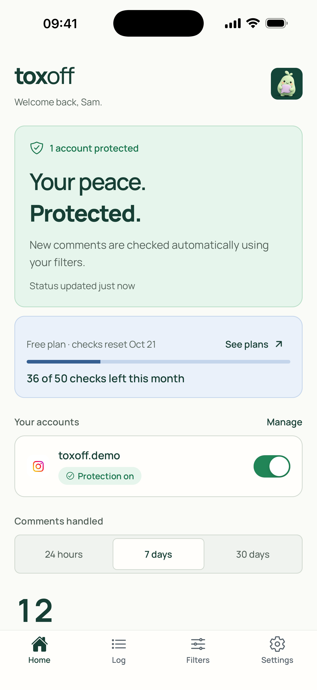
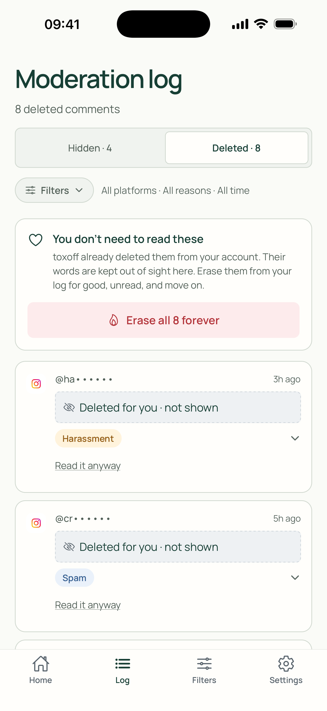
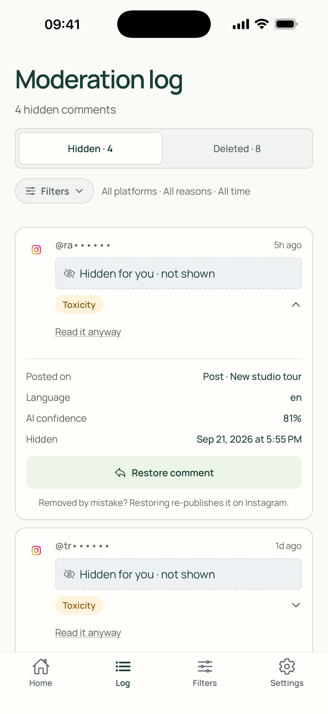
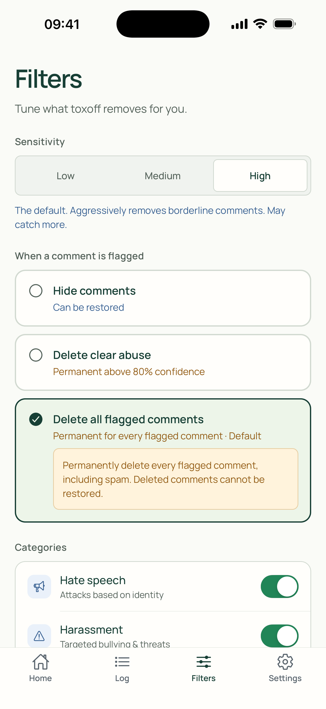
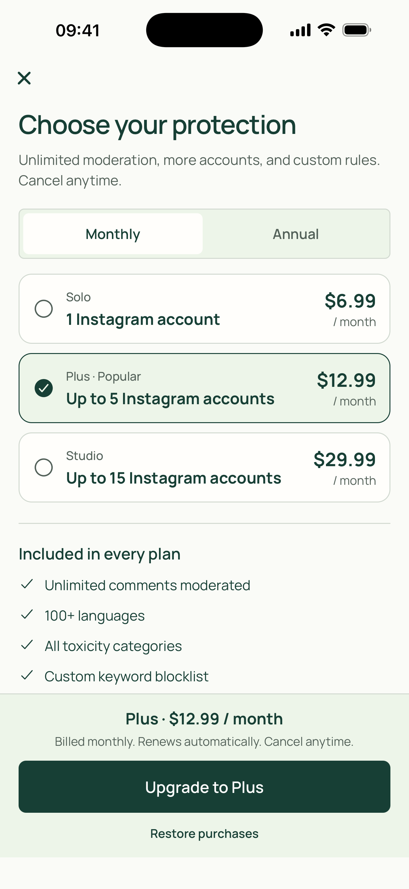
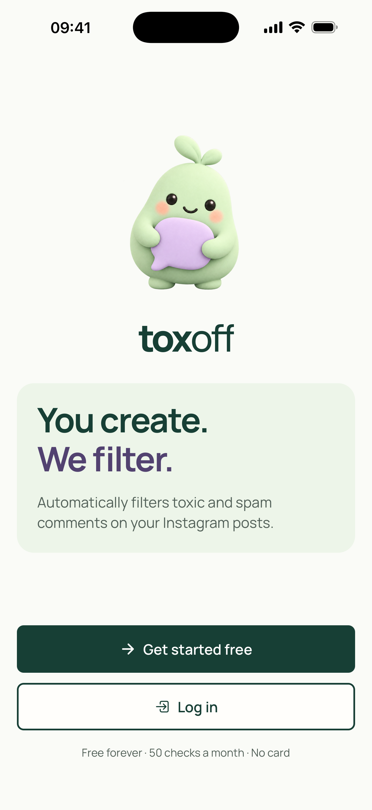

Select a screenshot to open the original at full size. Use the screen number when suggesting changes.






toxoff
Select a screenshot to open the original at full size. Use the screen number when suggesting changes.





